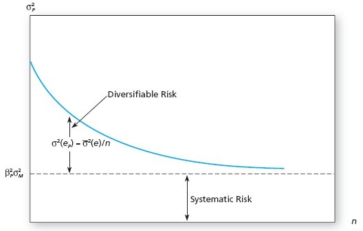
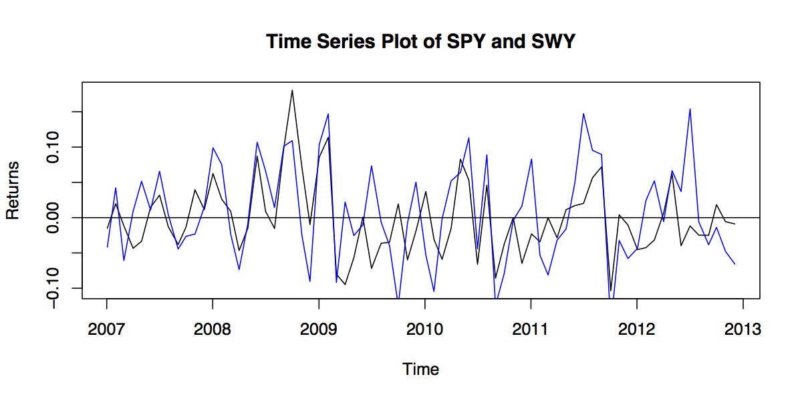

Index Models
Motivation
Recall that for portfolio optimization with \(N\) assets we must
estimate all means, variances and covariances:
\[\begin{split}\# \,\, \text{of estimates} & = \frac{N(N+3)}{2}.\end{split}\]
Suppose you have a dataset consisting of 5 years of monthly returns
for each asset (i.e. 60 observations per asset):
| \(N\) |
50 |
100 |
1000 |
3000 |
|---|
| # Estimates |
1325 |
5150 |
501,500 |
4,504,500 |
| Data |
3000 |
6000 |
60,000 |
180,000 |
Note: it is impossible to estimate \(P\) parameters with \(N\)
data observations if \(N < P\).
Motivation
The return to an asset can always be decomposed into two parts:
\[\begin{split}r_i & = E[r_i] + \epsilon_i = \mu_i + \epsilon_i,\end{split}\]
where \(\epsilon_i\) has zero mean (\(\mu_{\epsilon_i} = 0\))
and standard deviation \(\sigma_{\epsilon_i}\).
- The first term of the equation above is the expected return.
- The second term is the unexpected, or unanticipated return (also
referred to as a shock).
- This decomposition is not dependent on a model or special
assumptions.
Single-Factor Model
Suppose there is a market factor \(m\) that influences the returns
to all firms.
- Assume we can further decompose the shock, \(\epsilon_i\), into
two parts:
\[\epsilon_i = \beta_i m + \varepsilon_i.\]
Single-Factor Model
In this case the return can be written as a single-factor model:
(1)\[\begin{split}r_i & = \mu_i + \beta_i m + \varepsilon_i.\end{split}\]
- \(m\) and \(\varepsilon_i\) have means \(\mu_m = \mu_{\varepsilon_i}
= 0\), standard deviations \(\sigma_m\) and
\(\sigma_{\varepsilon_i}\), and are uncorrelated (\(Cov(m, \varepsilon_i) = 0\)).
- \(\epsilon_i\) is still unanticipated since \(\mu_{\epsilon_i} = \mu_m + \mu_{\varepsilon_i} = 0\).
- \(\beta_i\) is a measure of the sensitivity of \(r_i\) to \(m\).
Decomposing Risk
We can now compute variances using the model:
\[\begin{split}\sigma^2_i & \equiv Var(r_i) = Var(\mu_i + \beta_i m +
\varepsilon_i) \qquad\end{split}\]
\[\begin{split}& \qquad = \beta^2_i Var(m) + Var(\varepsilon_i) + 2\beta_iCov(m,\varepsilon_i)\end{split}\]
\[\begin{split}& = \beta^2_i \sigma^2_m + \sigma^2_{\varepsilon_i}. \qquad \qquad
\qquad \quad \,\end{split}\]
- We made use of \(Var(\mu_i) = 0\) and \(Cov(m,\varepsilon_i) = 0\).
Decomposing Risk
We can use the model to compute covariances between assets:
\[\begin{split}Cov(r_i,r_j) & = Cov(\mu_i + \beta_i m + \varepsilon_i, \mu_j + \beta_j m + \varepsilon_j)\end{split}\]
\[\begin{split}& = \beta_i \beta_j Cov(m,m) \qquad \quad\end{split}\]
\[\begin{split}& = \beta_i \beta_j \sigma^2_m. \qquad \qquad \quad \enspace\end{split}\]
- \(Var(\mu_i) = Var(\mu_j) = Cov(\mu_i,\mu_j) = 0\), since \(\mu_i\)
and \(\mu_j\) are constants.
- We assumed \(Cov(\varepsilon_i, \varepsilon_j) = 0\).
- Intuitively, unanticipated shocks to different assets shouldn’t be
correlated.
Using an Index as a Factor
So what is \(m\)?
- We would like to find a macroeconomic variable correlated with all
assets.
- It is common to use a market index portfolio, such as the S&P 500
(we expect the return of a broad index to be correlated with
individual assets).
Using an Index as a Factor
In particular, let’s use \(m = r_m - \mu_m\), where \(r_m\) is
the return to the S&P 500 (\(m\) stands for market).
\[\begin{split}E[m] & = E[r_m - \mu_m] \quad\end{split}\]
\[\begin{split}& \quad = E[r_m] - \mu_m \,\end{split}\]
\[\begin{split}& = \mu_m - \mu_m \,\end{split}\]
\[\begin{split}& = 0. \qquad \enspace\end{split}\]
- So our assumption of \(E[m] = 0\) is satisfied.
Single-Index Model
Substituting this factor into the single-factor model of
Equation (1):
\[\begin{split}r_i & = \mu_i + \beta_i (r_m - \mu_m) + \varepsilon_i.\end{split}\]
We then manipulate the equation:
\[\begin{split}r_i & = r_f - r_f + \mu_i + \beta_i(r_m - r_f + r_f - \mu_m) +
\varepsilon_i \qquad \quad\end{split}\]
\[\begin{split}& = r_f + \underbrace{(\mu_i - r_f) - \beta_i (\mu_m -
r_f)}_{\alpha_i} + \beta_i (r_m - r_f) + \varepsilon_i \,\end{split}\]
(2)\[\Rightarrow r_{i,e} = \alpha_i + \beta_i r_{m,i} + \varepsilon_i.\]
Single-Index Model
Equation (2) is the single-index model.
- Note: \(\alpha_i = rp_i - \beta_i rp_m\).
Expected Return-Beta Relationship
Taking expectations of Equation (2), we find
\[\begin{split}rp_i & = \alpha_i + \beta_i rp_m,\end{split}\]
since \(E[\varepsilon_i] = 0\).
- \(\beta_i\) is known as the security Beta and is a measure of
the sensitivity of asset \(i\) to the market index.
- \(\beta_i rp_m\) is the systematic risk premium, since it is the
premium one could expect for taking on systematic risk.
- \(\alpha_i\) is the non-market premium. It is the risk premium
expected above that provided by the market.
In equilibrium we expect \(\alpha_i = 0\).
Why \(\alpha\) Must Be Zero
Why do we expect \(\alpha_i = 0\)?
- Suppose \(\alpha_i > 0\).
- We expect individuals to buy more of asset \(i\), putting more
weight on it in their individual portfolios relative to the market
portfolio.
Single-Index Regression
We express the single-index model as a regression:
\[\begin{split}r_{i,e}(t) & = \alpha_i + \beta_i r_{m,e}(t) + \varepsilon_i(t),\end{split}\]
where the \(t\) denotes that the relationship must hold for all
observations through time.
- We estimate the model by collecting historical
observations for \(r_m\), \(r_i\) and \(r_f\) and then
computing the regression estimates for \(\alpha_i\)
and \(\beta_i\).
Security Characteristic Line
The regression estimates of \(\alpha_i\) and \(\beta_i\) are denoted by
\(\hat{\alpha}_i\) and \(\hat{\beta}_i\).
- The fitted values of the regression are
(3)\[\begin{split}\hat{r}_{i,e}(t) & = \hat{\alpha}_i + \hat{\beta}_i r_{m,e}(t).\end{split}\]
- \(\hat{r}_{i,e}(t)\) are the values of the regression line.
- They are the values we expect \(r_{i,e}\) to take for given
values of \(r_{m,e}\).
Security Characteristic Line
- Residuals are not included since they are unexpected (deviations
from the line).
- Equation (3) is known as the Security Characteristic Line or
SCL.
Advantages of the Model
Suppose we want to use the Index Model to produce the estimates
required for portfolio optimization.
- Assume there are \(N\) assets in the portfolio.
\[\begin{split}\mu_{i,e} & = \alpha_i + \beta_i \mu_{m,e}\end{split}\]
\[\begin{split}\sigma^2_i & = \beta^2_i \sigma^2_m + \sigma^2_{\varepsilon_i}\end{split}\]
and
\[\begin{split}\sigma_{ij} & = \beta_i \beta_j \sigma^2_m.\end{split}\]
Advantages of the Model
Let’s count the number of parameters we must estimate.
- \(N\) estimates of \(\alpha_i\).
- \(N\) estimates of \(\beta_i\).
- \(N\) estimates of \(\sigma^2_{\varepsilon_i}\).
- One estimate of \(\mu_m\).
- One estimate of \(\sigma_m\).
Advantages of the Model
That’s a total of \(3N+2\) estimates.
- We’ll see this is much better than \(\frac{N(N+3)}{2}\)
estimates without the model.
Advantages of the Model
Suppose you have a dataset consisting of 5 years of monthly returns
for each asset (i.e. 60 observations per asset):
| \(N\) |
50 |
100 |
1000 |
3000 |
|---|
| # Estimates No Model |
1325 |
5150 |
501,500 |
4,504,500 |
| # Estimates Index Model |
152 |
302 |
3002 |
9002 |
| Data |
3000 |
6000 |
60,000 |
180,000 |
Clearly estimation is much more reasonable with the single-index model
for large \(N\).
Cost of the Model
The index model restricts the relationship among the asset variances
and covariances to be of a specific form.
- It is precisely this imposed structure that relieves us of the
estimation burden.
- However, it oversimplifies the true nature of the world.
- For example, it dichotomizes security risk into two components:
market and asset specific.
- But neglects to account for industry specific risk, etc.
- In this sense, the model may fail to capture important aspects of
market.
Index Model Portfolios
Suppose you hold a portfolio of \(N\) assets with
weights \(\omega_i\), \(i=1,\ldots,N\).
\[\begin{split}r_{p,e} & = \sum_{i=1}^N \omega_i r_{i,e} = \sum_{i=1}^N \omega_i
(\alpha_i + \beta_i r_{m,e} + \varepsilon_i) \qquad\end{split}\]
\[\begin{split}& \,= \underbrace{\sum_{i=1}^N \omega_i \alpha_i}_{\alpha_p} +
\underbrace{\left(\sum_{i=1}^N \omega_i \beta_i \right)}_{\beta_p}
r_{m,e} + \underbrace{\sum_{i=1}^N \omega_i \varepsilon_i}_{\varepsilon_p}\end{split}\]
\[\begin{split}& = \alpha_p + \beta_p r_{m,e} + \varepsilon_p. \qquad \qquad
\qquad \quad\end{split}\]
Index Model Portfolio Coefficients
The mathematics highlight some very nice results.
- \(\alpha_p\): The non-market return of the portfolio is a
weighted average of the non-market returns of individual assets.
- \(\beta_p\): The sensitivity of the portfolio to the market
excess return is a weighted average of the sensitivities of
individual assets.
- \(\varepsilon_p\): The portfolio shock is a weighted average of
individual shocks.
Index Model Portfolio Risk
Since the portfolio is described by a single index model, its risk can
be decomposed as
\[\begin{split}\sigma^2_p & = \beta^2_p \sigma^2_m + \sigma^2_{\varepsilon_p}.\end{split}\]
Note that,
\[\begin{split}\beta^2_p & = \left(\sum_{i=1}^N \omega_i \beta_i\right)^2\end{split}\]
not
\[\begin{split}\beta^2_p & = \sum_{i=1}^N \omega^2_i \beta^2_i.\end{split}\]
Index Model Portfolio Risk
The variance of \(\varepsilon_p\) can be written as
(4)\[\begin{split}\sigma^2_{\varepsilon_p} & \equiv Var(\varepsilon_p) =
Var\left(\sum_{i=1}^N \omega_i \varepsilon_i \right)\end{split}\]
(5)\[\begin{split}& = \sum_{i=1}^N \omega^2_i Var(\varepsilon_i) \qquad \quad \enspace\end{split}\]
(6)\[\begin{split}& = \sum_{i=1}^N \omega^2_i \sigma^2_{\varepsilon_i} \qquad
\qquad \quad\end{split}\]
Equation (5) follows from Equation (4)
because we assume that \(Cov(\varepsilon_i, \varepsilon_j) = 0\) for \(i
\neq j\).
Index Model Diversification
In the special case of an equally-weighted portfolio
\[\sigma^2_{\varepsilon_p} = \frac{1}{N^2} \sum_{i=1}^N \sigma^2_{\varepsilon_i} = \frac{1}{N} \overline{\sigma^2_{\varepsilon_p}},\]
where
\[\overline{\sigma^2_{\varepsilon_p}} = \frac{1}{N} \sum_{i=1}^N \sigma^2_{\varepsilon_i}.\]
Clearly,
\[\begin{split}\lim_{N \to \infty} \overline{\sigma^2_{\varepsilon_p}} & = 0.\end{split}\]
Index Model Diversification
Recall
\[\begin{split}\sigma^2_p & = \beta^2_p \sigma^2_m + \sigma^2_{\varepsilon_p}.\end{split}\]
Thus,
\[\begin{split}\lim_{N \to \infty} \sigma^2_p & = \lim_{N \to \infty} \beta^2_p
\sigma^2_m + \lim_{N \to \infty} \sigma^2_{\varepsilon_p}\end{split}\]
\[\begin{split}& = \beta^2_p \sigma^2_m.\end{split}\]
Index Model Diversification
\(\qquad\)

Index Model Example
Let’s estimate an index model.
- Use SPY (S&P 500 SPDR) as a surrogate for market returns.
- Estimate the model for SWY (Safeway).
- Download 5 years of monthly data from Yahoo Finance, between 1 Jan
2007 and 31 Dec 2012.
- Use adjusted closing prices to compute returns.
Index Model Example
\(\qquad\)

Index Model Example
| Parameter |
Estimate |
Standard Error |
P-Value |
|---|
| \(\alpha\) |
0.003903 |
0.007387 |
0.599 |
| \(\beta\) |
0.7620 |
0.1319 |
1.92e-07 |
The Adjusted \(R^2\) is 0.3133.
{kind=link}
{kind=link}
{kind=link}